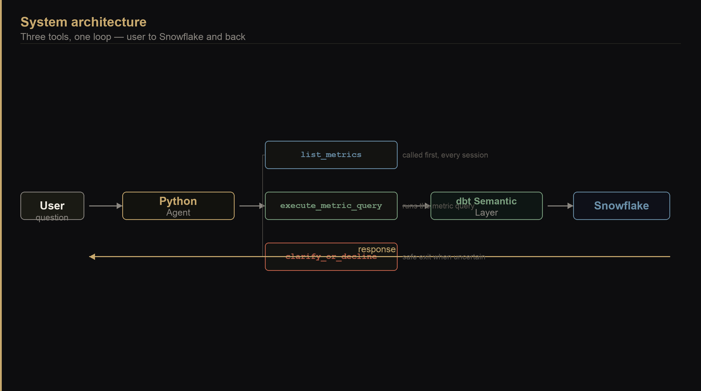
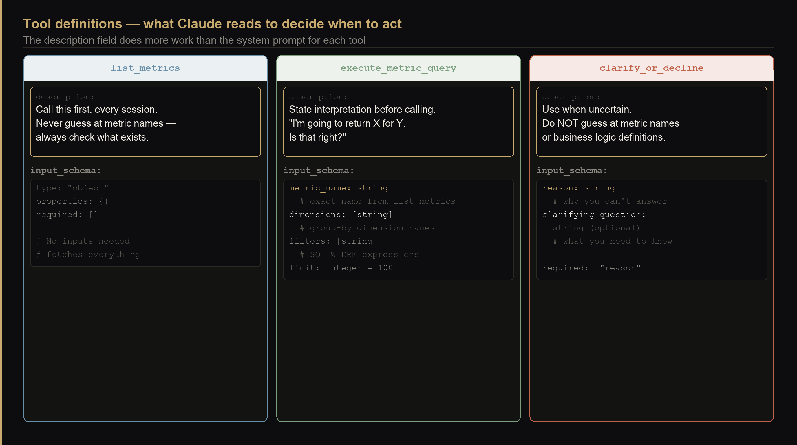
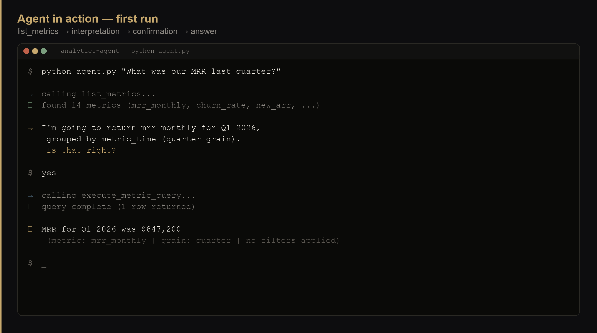

This is Part 1 of Agents on your semantic layer: Part 0 — why they fail · Part 1: build the foundation (this post) · Part 2: harden it
Companion code: github.com/PZawieja/semantic-layer-agent
Part 0 explained why semantic layer agents fail in production — hallucinated metric names, wrong dimension grain, silent wrong answers. This post builds the version that avoids those failures. By the end you'll have a Python agent that answers "what was our MRR last quarter?" against your real dbt Semantic Layer on Snowflake. Three tools, one loop, about 80 lines.
What we're building
The architecture is deliberately minimal.

Three tools, not thirty. list_metrics gives the agent a map — it calls this first every session so it never guesses at metric names. execute_metric_query runs the actual query against your Semantic Layer. clarify_or_decline gives the agent a safe exit when it can't confidently map a question to a metric. A fourth tool — a "compare metrics" helper, a schema explorer — would add surface area without changing what the agent can actually answer. Add tools when a real question breaks these three, not before.
The reasoning engine is Claude. The data layer is your dbt Cloud Semantic Layer, which handles all the SQL — which tables to join, which filters to apply, what "MRR" means in your specific models. The agent doesn't write SQL. It asks the Semantic Layer for results by name.
Prerequisites
You need a dbt Cloud account with the Semantic Layer enabled and at least one metric defined in your project. If you're running MetricFlow locally without dbt Cloud, the sl_query() helper below will look different — the agent logic from Step 4 onward is identical.
uv init analytics-agent
cd analytics-agent
uv add anthropic requests python-dotenv
Create a .env file at the project root:
ANTHROPIC_API_KEY=sk-ant-...
DBT_SL_URL=https://semantic-layer.cloud.getdbt.com/api/graphql
DBT_SL_TOKEN=your_dbt_cloud_service_token
DBT_ENV_ID=your_environment_id
Your DBT_SL_TOKEN is a dbt Cloud service token with Semantic Layer Only permissions. Your DBT_ENV_ID is the numeric ID from your dbt Cloud environment settings.
Step 1 — Connect to the Semantic Layer
Think of this as the foundation layer. Everything else calls this one function.
import json
import os
import requests
from dotenv import load_dotenv
load_dotenv()
def sl_query(gql: str, variables: dict | None = None) -> dict:
resp = requests.post(
os.environ["DBT_SL_URL"],
headers={
"Authorization": f"Bearer {os.environ['DBT_SL_TOKEN']}",
"Content-Type": "application/json",
},
json={"query": gql, "variables": variables or {}},
timeout=30,
)
resp.raise_for_status()
data = resp.json()
if "errors" in data:
raise RuntimeError(data["errors"])
return data
One function, one job: POST to the Semantic Layer API and raise on errors. Everything that follows builds on this.
Step 2 — Tool 1: list_metrics
The agent's orientation call. Every session starts with this. The agent learns what metrics exist, what each one measures, and what dimensions it can be sliced by — before it touches any user question.
_LIST_METRICS_GQL = """
query ListMetrics($environmentId: BigInt!) {
metrics(environmentId: $environmentId) {
name
description
type
dimensions {
name
description
}
}
}
"""
def list_metrics() -> list[dict]:
result = sl_query(
_LIST_METRICS_GQL,
{"environmentId": int(os.environ["DBT_ENV_ID"])},
)
return result["data"]["metrics"]
The dimension descriptions matter more than anything else in this call. If customer_id and account_id exist as separate dimensions, their descriptions in your dbt schema.yml should say exactly that: customer_id: the individual contact person, NOT the company/account. Write those descriptions for the LLM, not for humans. The agent reads them verbatim when deciding which dimension to use.
Step 3 — Tool 2: execute_metric_query
The query execution tool. It takes a metric name, a list of dimensions to group by, optional SQL filter expressions, and a row limit. The Semantic Layer handles all the join logic underneath.
_QUERY_GQL = """
query RunMetric(
$environmentId: BigInt!
$metrics: [MetricInput!]!
$groupBy: [GroupByInput!]
$where: [WhereInput!]
$limit: Int
) {
query(
environmentId: $environmentId
metrics: $metrics
groupBy: $groupBy
where: $where
limit: $limit
) {
sql
jsonResult
}
}
"""
def execute_metric_query(
metric_name: str,
dimensions: list[str],
filters: list[str] | None = None,
limit: int = 100,
) -> dict:
variables: dict = {
"environmentId": int(os.environ["DBT_ENV_ID"]),
"metrics": [{"name": metric_name}],
"groupBy": [{"name": d} for d in dimensions],
"limit": limit,
}
if filters:
variables["where"] = [{"sql": f} for f in filters]
result = sl_query(_QUERY_GQL, variables)
return result["data"]["query"]
The sql field in the response is the query the Semantic Layer generated. Log it alongside the result during development — seeing the SQL is the fastest way to diagnose a wrong answer.
The dbt Cloud Semantic Layer uses an async query pattern for large result sets — it may return a queryId instead of inline jsonResult. If you see a queryId field instead of results, add a polling loop that calls fetchResults(queryId: ...) until status == "SUCCESSFUL". Check the dbt Semantic Layer GraphQL docs for the current schema.
Step 4 — Tool 3: clarify_or_decline
This tool doesn't hit the API. It's a structured signal from the agent that it needs more information — or that it can't answer at all.
def clarify_or_decline(
reason: str,
clarifying_question: str | None = None,
) -> dict:
return {
"status": "needs_clarification",
"reason": reason,
"question": clarifying_question,
}
Part 2 wires the response back into the conversation and stores the user's answer in memory. For now, the critical thing is giving Claude a named, typed exit. Without it, the model treats "I'm not sure" as a failure state and invents an answer instead.
Step 5 — Tell Claude about the tools

The description field in each tool definition is what Claude reads to decide when to call it. Write it like an instruction, not documentation.
import anthropic
client = anthropic.Anthropic()
TOOLS = [
{
"name": "list_metrics",
"description": (
"List all available metrics from the dbt Semantic Layer. "
"Call this at the start of every session, before any query. "
"Never guess at metric names — always check what exists first."
),
"input_schema": {
"type": "object",
"properties": {},
"required": [],
},
},
{
"name": "execute_metric_query",
"description": (
"Run a metric query against the dbt Semantic Layer. "
"Before calling this, state your interpretation to the user: "
"'I'm going to return [metric] for [period], grouped by [dimension]. Is that right?' "
"Only proceed after they confirm."
),
"input_schema": {
"type": "object",
"properties": {
"metric_name": {
"type": "string",
"description": "Exact metric name from list_metrics — do not invent names",
},
"dimensions": {
"type": "array",
"items": {"type": "string"},
"description": "Dimension names to group by, from the metric's dimension list",
},
"filters": {
"type": "array",
"items": {"type": "string"},
"description": "SQL WHERE expressions, e.g. [\"metric_time__quarter = 'Q1-2026'\"]",
},
"limit": {"type": "integer", "default": 100},
},
"required": ["metric_name", "dimensions"],
},
},
{
"name": "clarify_or_decline",
"description": (
"Use this when you cannot map the user's question to a metric with confidence, "
"or when the question contains an ambiguous term you haven't resolved. "
"This is the correct response when uncertain — do NOT guess at metric names "
"or business logic definitions."
),
"input_schema": {
"type": "object",
"properties": {
"reason": {
"type": "string",
"description": "Why you can't answer with confidence",
},
"clarifying_question": {
"type": "string",
"description": "The specific question to ask the user",
},
},
"required": ["reason"],
},
},
]
Step 6 — Write the system prompt
ORG_DEFINITIONS = """
Company metric definitions — apply these unless the user explicitly overrides:
- churn: notification_date attribution, MRR basis
- active_customer: subscription_status = 'active' AND last_payment within 90 days
- MRR: sum of monthly_value for active subscriptions, excluding trials
"""
SYSTEM = f"""You are an analytics assistant connected to our dbt Semantic Layer on Snowflake.
Rules — non-negotiable:
1. Call list_metrics at the start of every session, before any other action.
2. Before running execute_metric_query, tell the user your exact interpretation:
"I'm going to return [metric] for [period], grouped by [dimension]. Is that right?"
Only execute after they confirm.
3. If you cannot map a question to a metric with confidence, use clarify_or_decline.
A polite request for clarification is always better than a confident wrong answer.
{ORG_DEFINITIONS}"""
The ORG_DEFINITIONS block is what Part 0 called "Level 3 memory" — company-wide agreed definitions injected into every session. Fill this in with your actual agreed definitions before your first real deployment. Part 2 shows how to make this dynamic so it includes per-user preferences on top of the base definitions.
Step 7 — The agent loop
def dispatch(name: str, inputs: dict) -> str:
if name == "list_metrics":
return json.dumps(list_metrics())
if name == "execute_metric_query":
return json.dumps(execute_metric_query(**inputs))
if name == "clarify_or_decline":
return json.dumps(clarify_or_decline(**inputs))
return json.dumps({"error": f"unknown tool: {name}"})
def run_agent(question: str) -> str:
messages = [{"role": "user", "content": question}]
while True:
response = client.messages.create(
model="claude-opus-4-8",
max_tokens=4096,
system=SYSTEM,
tools=TOOLS,
messages=messages,
)
if response.stop_reason == "end_turn":
return next(b.text for b in response.content if hasattr(b, "text"))
if response.stop_reason == "tool_use":
messages.append({"role": "assistant", "content": response.content})
tool_results = [
{
"type": "tool_result",
"tool_use_id": block.id,
"content": dispatch(block.name, block.input),
}
for block in response.content
if block.type == "tool_use"
]
messages.append({"role": "user", "content": tool_results})
if __name__ == "__main__":
import sys
print(run_agent(" ".join(sys.argv[1:])))
That's the complete loop. Claude creates a message, checks whether it needs a tool, you dispatch it, feed the result back, repeat until Claude has an answer and stops.
Run it:
python agent.py "What was our MRR last quarter?"

What you have now
A real analytics agent against your real data. The agent calls list_metrics first, maps the question to a real metric name, states its interpretation, waits for your confirmation, then runs the query. Test it with 3–5 of your most common analytics questions before moving to Part 2.
Ask it "what's our churn rate?" and it will pick whichever churn definition it infers from context — contract end date or notification date — without asking. It will be confident. It may be wrong about what you meant. That's the next problem. Part 2 adds a pre-flight disambiguation check, a template library for common question patterns, and per-user memory so it stops asking the same clarifying question twice.
What's the first question your team asks every Monday morning? That's the one to test before you move to Part 2.
Takeaways
- Three tools cover the full range — list (orientation), query (execution), decline (safety valve). Don't add a fourth until a real question breaks these three.
- The tool description is the real instruction — what you write in each tool's
descriptionis what Claude reads to decide when to call it. "Never guess at metric names" inlist_metricsdoes more work than the same sentence in the system prompt. - list_metrics before everything — if the agent doesn't call this first, it will invent metric names that sound plausible. Make it the first rule in the system prompt and the first line of every tool description.
- Interpretation confirmation before execution — requiring the agent to state what it's about to query is the single cheapest safeguard. It catches wrong dimension grain, wrong time period, and wrong metric — all before any data is touched.
- ORG_DEFINITIONS removes half the disambiguation questions — fill in your actual agreed definitions before deploying to real users. The company-wide definition of "churn" should not be decided by the LLM at query time.